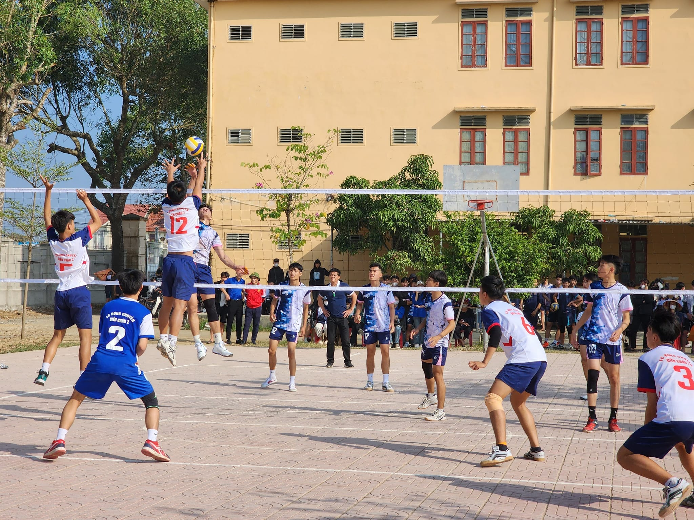
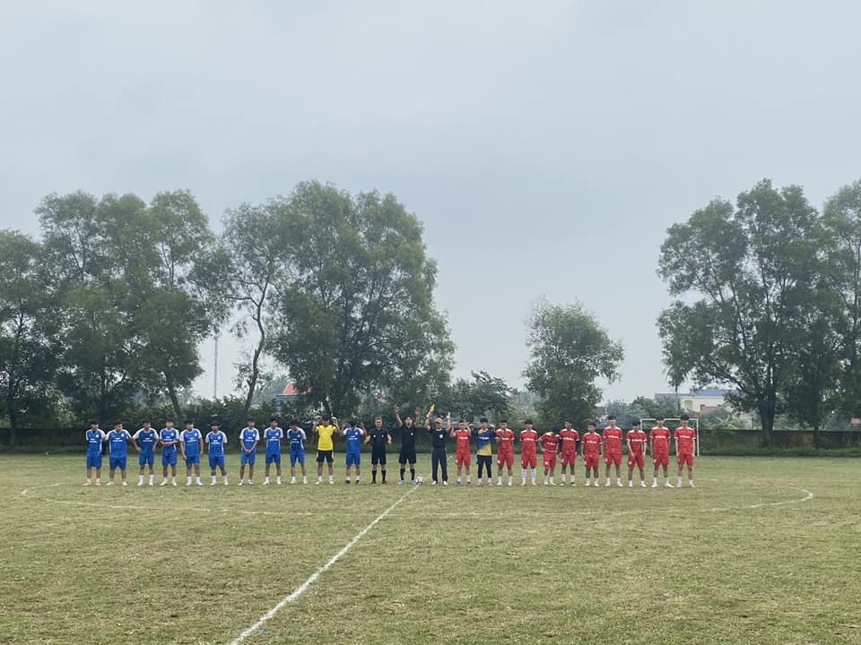

|  |
XIN CHÚC MỪNG KẾT QUẢ DỰ THI HỘI KHỎE PHÙ ĐỔNG CẤP HUYỆN CỦA TRƯỜNG THPT DIỄN CHÂU 2!Sau 3 ngày tham gia dự thi, Đoàn chúng ta đã xuất sắc giành 10 giải nhất, 13 giải nhì và 8 giải 3 ở các nội dung thi đấu:
Xin cảm ơn tinh thần thi đấu hết mình của các vận động viên, sự tận tâm của các huấn luyện viên, sự ủng hộ về tinh thần và vật chất của GV, NV, HS, phụ huynh, các cá nhân tổ chức ngoài nhà trường! Chúc Đoàn ta sẽ tiếp tục gặt hái được nhiều giải cao trong HKPĐ cụm huyện sắp tới tại Hoàng Mai! |
|
|
|
|  |
TRƯỜNG THPT DIỄN CHÂU 2 SÔI NỔI THAM GIA HỘI KHỎE PHÙ ĐỔNG CẤP HUYỆN LẦN THỨ XX NĂM 2023!Nhằm duy trì và đẩy mạnh cuộc vận động “Toàn dân rèn luyện thân thể theo gương Bác Hồ vĩ đại, nâng cao tinh thần rèn luyện thể lực, giáo dục nếp sống văn hóa lành mạnh cho học sinh. Sau thành công của HKPĐ cấp trường, tham dự HKPĐ cấp huyện, Trường THPT Diễn Châu 2 có 96 vận động viên tham gia ở 51 nội dung thi đấu của 9 môn thi! Ngày thi đấu thứ nhất, vận động viên đội tuyển bóng đá nữ đã có những khoảnh khắc đep trên sân cỏ với tinh thần thi đấu hết mình và dừng cuộc trước tuyển thủ THPT Diễn Châu 3. Đội tuyển bóng đá nam không kém phần quyết liệt trước đội tuyển THPT DL Quang Trung, các bạn ấy đã xuất sắc giành chiến thắng với tỷ số 2 - 0 và tiếp tục gặp đội tuyển THPT Nguyễn Xuân Ôn vào chiều 5/12/2023. Cùng ngày, tại bể bơi Phong Liên – thị trấn Yên Thành, 3 vận động viên đã mang về 1 giải nhì, 2 giải 3. Mặc cho khó khăn về điều kiện thi đấu, mặc cho đối thủ mạnh và thời tiết se lạnh, sức nóng trong mỗi tuyển thủ, và sự nồng nhiệt của cổ động viên đã giúp đội tuyển hoàn thành ngày thi đấu thứ nhất với nhiều cảm xúc và sự sẻ chia đáng quý! Rất mong tinh thần ấy được lớn mạnh hơn trong những ngày Hội khoẻ Phù Đổng tiếp theo! THPT Diễn Châu 2 |